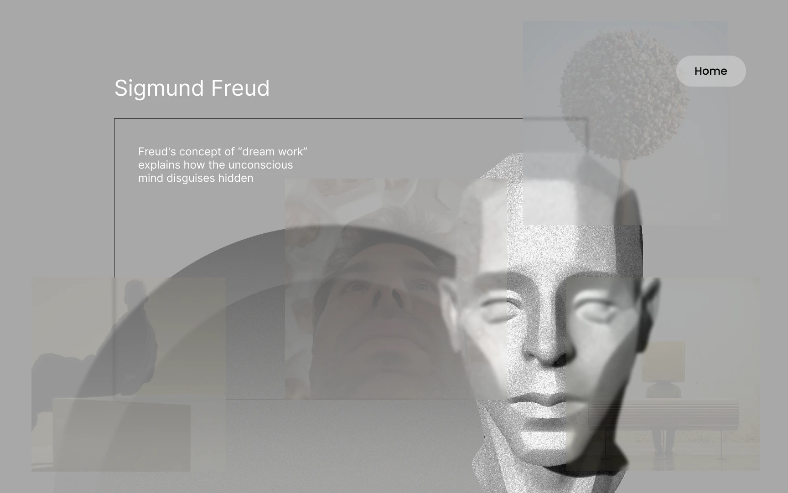
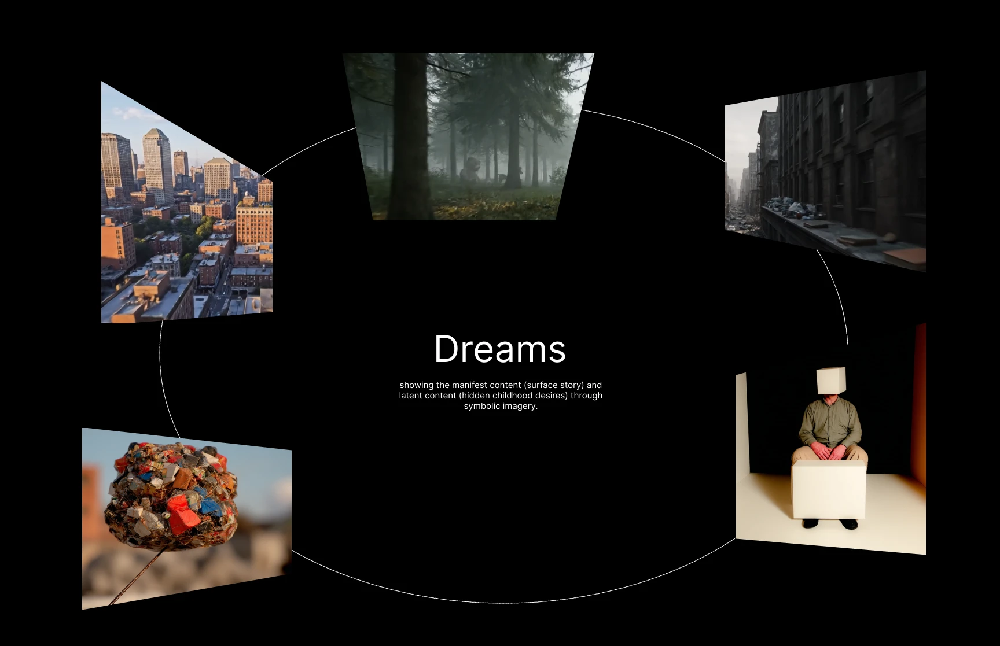
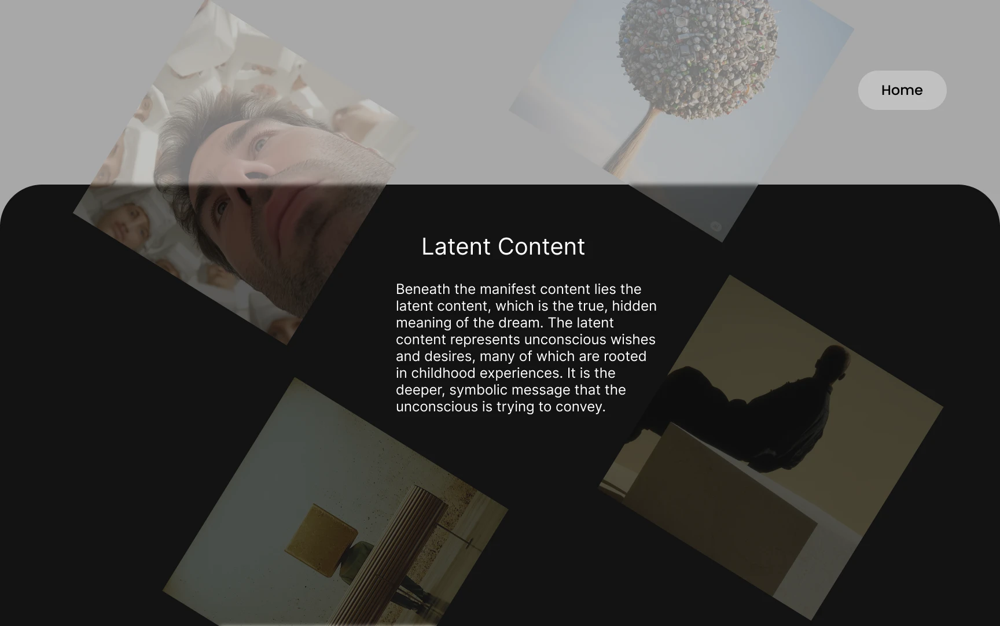
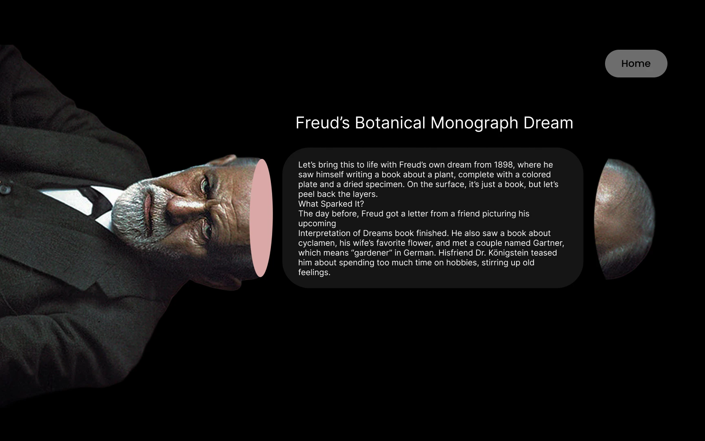
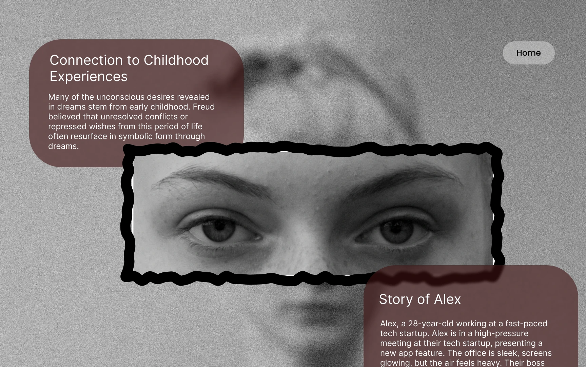

Four theories of why we dream, told as one shared experience.





Each theory explains dreaming differently, and every person's dreams look different — so the theories read as unrelated.
How can dream history highlight the feelings people share, rather than the terms that set the theories apart?
Show the patterns that repeat across people, and reduce four dense theories to a common framework that needs no psychology background.
Freud's The Interpretation of Dreams (1899) is the starting point and the source of the visual language: dreams are disguised, condensed and displaced — a half-legible surface over hidden thought.
Jung, Hobson & McCarley and Revonsuo were layered on top to test whether one visual system could hold contradictory ideas — while staying legible with no psychology background.
"Dreams are wishes in disguise."
Every dream disguises a repressed wish, often from childhood. Nothing in a dream is random.
The dream you remember (manifest) is an edited surface; the hidden thought behind it (latent) is what it means.
Condensation fuses ideas into one image, displacement shifts emotion to small details, symbolization swaps ideas for objects, revision smooths it into a story.
Free association, not a symbol dictionary — the "royal road to the unconscious."
"Dreams speak in shared symbols."
Dreams are not disguised wishes but messages from a deeper, shared layer of the mind.
Beneath personal memory lies a layer common to all people, inherited rather than learned.
The Shadow, the Wise Old Man and the Great Mother recur in dreams and myths across cultures.
"Dreams narrate random noise."
Dreams are the cortex narrating random brainstem signals fired during REM sleep.
PGO waves hit the visual and motor cortex; the brain stitches them into characters, places and emotion.
Bizarre dreams are neurons firing without intent — meaning is added afterwards, not hidden inside.
"Dreams rehearse danger."
Dreams over-represent chases, falls and attacks to rehearse threat avoidance safely.
Children and people in high-threat settings dream more threat content.
Why nightmares share themes across cultures — which neither noise nor personal wishes explain well.
The interface behaves like the dreamwork Freud describes, so the experience carries the idea, not just a caption.
The unconscious — half-lit, like a recalled dream.
Manifest content — the orderly surface of a dream.
Latent content bleeding through, never fully resolving.
Condensation — many ideas compressed into one image.
No theory outranks another.
Academic weight in the titles, easy reading in the text.
The prototype is set in Poppins — a neutral geometric sans that stays plain and legible over the busy visuals. This write-up uses the portfolio's Jost.
Click through all 27 screens right here.